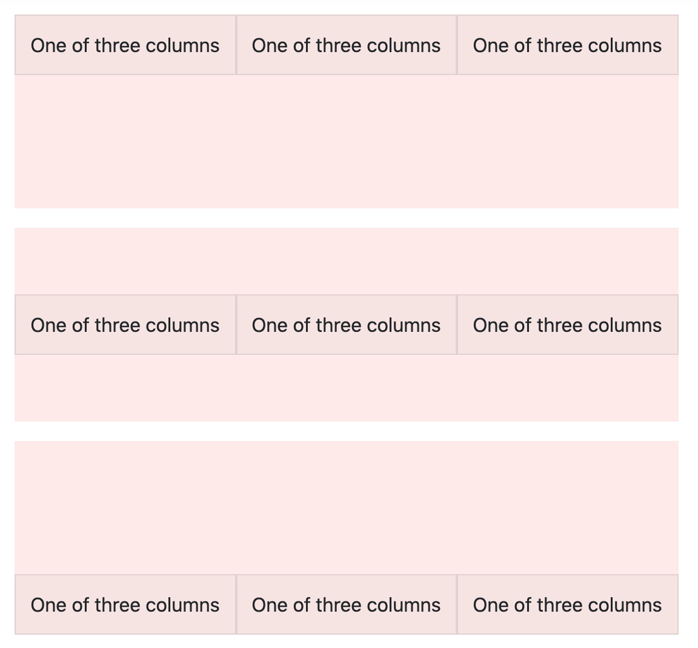
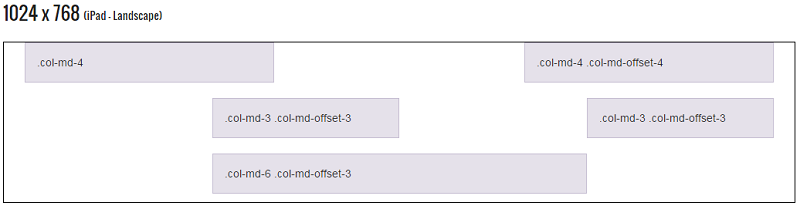

Background
為一個前端框架，包括 HTML、CSS 及 JavaScript 的框架。
Install
Download From CDN
因為是載入別人的主機，所以流量部分不會算自己的，且會根據使用者所在地連到距離最近的主機，所以速度不會是問題。
Download To Local
至 https://getbootstrap.com/docs/5.2/getting-started/download/下載，可以客製化修改一些程式碼，ex:button 的顏色或是 radius，可下載部分或全部。
Usage
Layout - BreakPoint
在特定容器內會觸發，像是寬度小於多少或是高度小於多少隱藏，ex: d-xl-none 當視窗小於 1200 px會出現，並且可以搭配
none、inline、inline-block。如下：
.d-{value}forxs.d-{breakpoint}-{value}forsm,md,lg,xlandxxl
Layout - Container
Containers are the most basic layout element in Bootstrap and are required when using our default grid system. ，因此不管怎樣外面都要包一個 class 為container，這樣才可以使用 grid 或是 column。如下：
Layout - Grid
Grid System 是經由 Row 和 Column 來組合，並每列由 12 個 column 組成。若格數滿了就會排在下一排，一行可以未滿 12，但超過會在下一行。
同時，也可以設定符合裝置大小的 Column，ex: 設定電腦版一列有 4 行，設定手機版一列有 2 行。如下：
col-4 代表這個 div,column 要佔版面多少，此表示一列有 3 行(因爲一個占 4，最多 12，12/4=3)
col-md-4 代表的是在平板（md：768px）以上
col-lg-4 代表的是在電腦版（lg：992px）以上
Layout - Column
- Columns build on the grid’s flexbox architecture, When building grid layouts, all
content
goes in columns. ，因此透過新增
align-items-start、align-items-center、align-items-end來安排 row 的位置。

- Offsetting Columns，將 Column 向右移，意即向左填補空格。 
Components
直接取用他們 html 即可。另外想改變顏色的話，可以在裡面新增 style 快速更動。
Bootstrap Icons
可至 Bootstrap Icon，透過 copy html 可以快速實現製造 icon 然後有各式各樣實用的 icon。